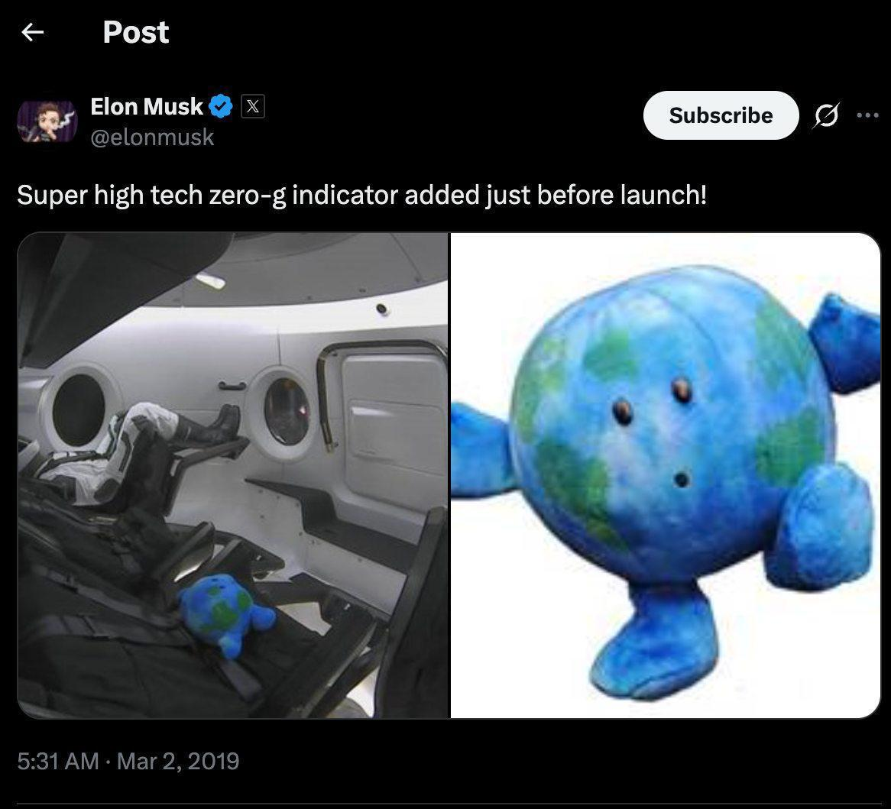
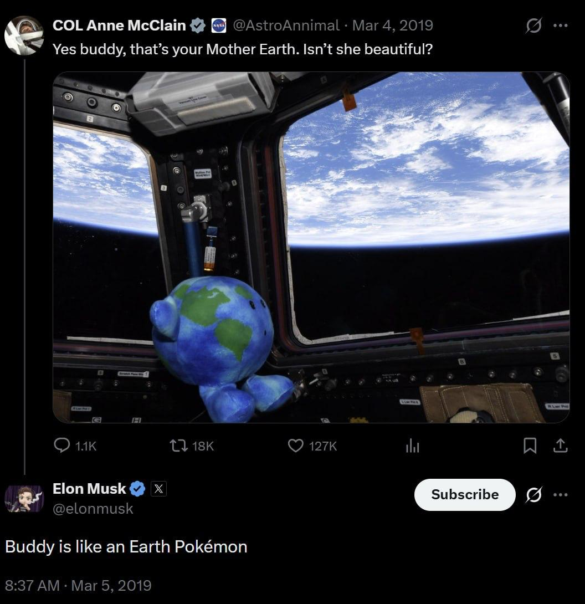
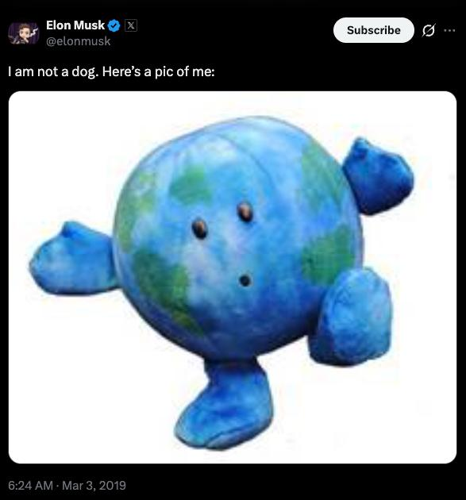
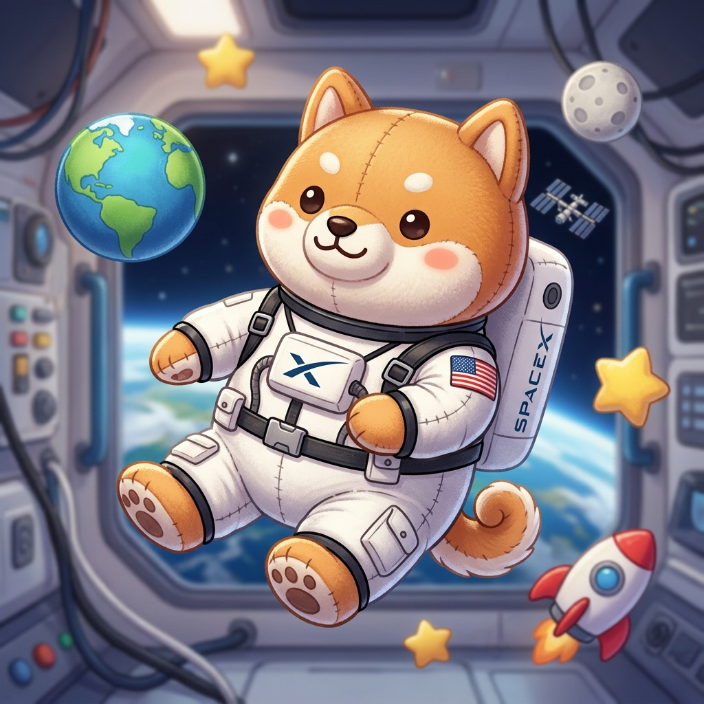
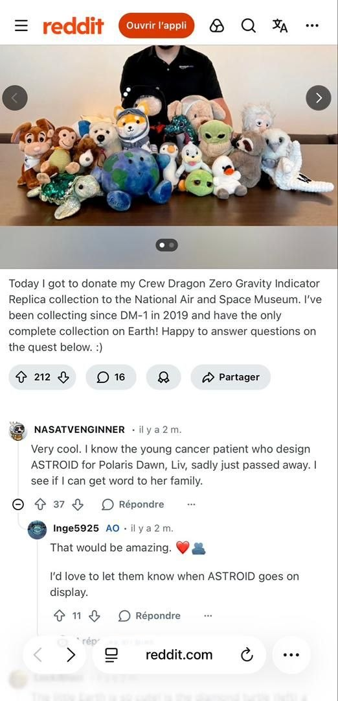

THE ALPHA MASCOT
Super High-Tech Zero-G Indicator
The Genesis

Super high tech zero-g indicator added just before launch!

Buddy is like an Earth Pokémon

I am not a dog. Here’s a pic of me:

In 2019, history was made. Not just by rockets, but by a small, soft ambassador of humanity. Earthy was hand-picked by Elon Musk as the "super high-tech" indicator of weightlessness, paving the way for all future space companions.
Alpha vs Beta
Earthy
The Original. The Legend. Recognized mascot of the SpaceX Demo-1 mission. 100% Zero-G certified.

Asteroid
The Newcomer. Shiba Inu companion. Following in the giant footsteps of the Earthy legend.
Recognized History

The legacy continues. Our "Zero Gravity Indicator" collection has officially been recognized as a historical landmark, finding its home in the National Air and Space Museum. From the first launch in 2019 to the modern day, the Little Earth tribe represents the only complete collection of space-flown mascots on Earth.
The alpha utility
Contract Address
ABCDPUMP
Join the Odyssey
Earthy is more than a plushie. It's a symbol of our reach for the stars.